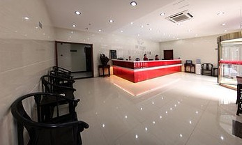
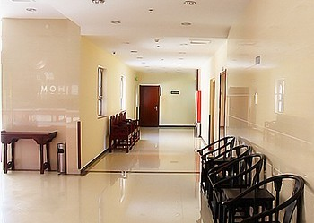
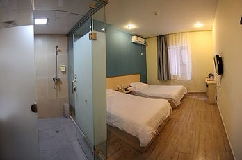
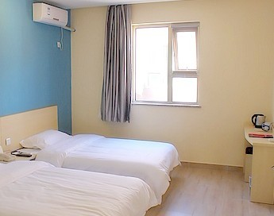
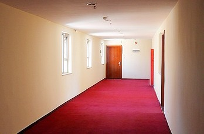

中国五子棋团体公开赛中国代表队选拔赛通知
#1 中国五子棋团体公开赛中国代表队选拔赛通知 作者：臭脚不丫儿 发表时间：2012-2-6 12:14:56
中国五子棋团体公开赛（第九届世界连珠团体锦标赛）中国代表队选拔赛，定于2月25-26日，在北京飘HOME连锁酒店举行，地点：北京朝阳王四营乡观音堂799号。
注意原规程写的时限为：每方60分钟一手棋加30秒，超时判负。相关人士提出以世团赛正式时限：每方2小时15分钟一手棋加30秒，相差太多，不利于检验棋手。经组委会讨论，在考虑棋手特别是外地棋手不能在京停留时间过长的前提下，决定将选拔赛时限改为：时限：每方90分钟一手棋加30秒，超时判负。
赛程定为：
第一天：9-13点第一轮，14-18点第二轮，19-23点第三轮
第二天：8-12点第四轮，13-17点第五轮，18-22点第六轮
由于赛程紧，且完赛时间晚，建议本市棋手也住宿赛场。
赛场住宿标准间一天120元
三餐一天60元
飘HOME连锁酒店：北京朝阳王四营乡观音堂799号，公交455、541、11、23方家村下车向东路口右弯400米左右顺路右弯。
公交455途经：四惠站-百子湾桥-大郊亭桥东-小海子-方家村-朝阳半壁店-启智学校-观音堂-观音堂东-南花园东口-南花园。
公交541途经：高碑店东-小郊亭-朝阳半壁店-方家村-四根旗杆-小海子-唐家村-东石门-大郊亭桥西-珠江帝景-平乐园北-北京工业大学北站-北京工业大学-松榆北路东口-松榆北路西口-武圣东里-农光东里-劲松桥东-劲
松。
公交23途经：朝阳半壁店-方家村-四根旗杆-小海子-唐家村-东石门-大郊亭桥西-珠江帝景-九龙花园-双井桥西-垂杨柳-马圈-广渠门内-安化楼-培新街-榄杆市-磁器口西-水道子-桥湾-崇文三里河-过街楼-珠市口西-板章路-
虎坊桥路口南-虎坊路。
公交11途经：大北窑东-八王坟南-北京东站北-九龙山-珠江帝景-大郊亭桥西-大郊亭桥东-东石门-唐家村-小海子-四根旗杆-方家村-朝阳半壁店-观音堂-王四营-王四营桥南-孛罗营。
北京火车站到方家村：
1、地铁2号线→地铁1号线→11路，全程约50分钟/9.9公里。北京站1站乘坐地铁2号线(外环),在建国门站换乘地铁1号线(四惠东方向),在大望路站下车140米步行至八王坟南站乘坐11路,在方家村站（10站）下车。
2、北京站380米步行至北京站东站乘坐637路,在马圈站下车，乘坐23路,在方家村站下车。全程约1小时/10.6公里
3、打车基本费用:25元
北京西站到方家村：
1、99路下行→地铁1号线→11路，全程约1小时20分钟/20.8公里。北京西站3站乘坐99路下行,在军事博物馆站下车40米步行至军事博物馆站乘坐地铁1号线(四惠东方向),在大望路站下车140米步行至八王坟南站，乘坐11路,在方家村站下车。
2、北京西站乘坐673路,在大北窑北站下车。350米步行至大北窑东站乘坐11路,在方家村站下车全程约1小时40分钟/19.6公里。
3、打车基本费用：46元
北京南站到方家村：
1、102路→23路，全程约1小时20分钟/16.1公里。北京南站乘坐102路,在虎坊路站下车乘坐23路,在方家村站下车。
2、打车基本费用:41元
北京首都机场到方家村：
1、机场快轨到东直门，东直门240米步行至东直门北站乘坐特12内,在广渠门站下车，300米步行至马圈站乘坐23路,在方家村站下车。
2、打车基本费用:78元
北京南苑机场到方家村：
1、501路→657路→455路，全程约1小时50分钟/23.2公里。南苑机场乘坐501路,在大红门桥站下车，320米步行至大红门桥站，乘坐657路,在百子湾桥站下车，乘坐455路,在方家村站下车。
2、打车基本费用:54元。
请已报名的棋手与组委会（手机：13321151332，QQ：133211513）联系通报以下信息：
1、几号几点到京入住赛场？
2、计划在赛场住几天？
3、在赛场用餐否？
组委会
&nbs
#2 Re:中国五子棋团体公开赛中国代表队选拔赛通知 作者：掌棋宣传员 发表时间：2012-2-6 12:20:54
赛场住宿标准间一天120元
是1个房间2个人240的意思呗??
#3 Re:中国五子棋团体公开赛中国代表队选拔赛通知 作者：掌棋宣传员 发表时间：2012-2-6 12:24:11
比赛和住的地方在一起挺好...#4 Re:中国五子棋团体公开赛中国代表队选拔赛通知 作者：臭脚不丫儿 发表时间：2012-2-6 12:24:43
一个标间120元每天，每人60元每天。
［此帖子已被 臭脚不丫儿 在 2012-2-6 12:30:20 编辑过］
#5 Re:中国五子棋团体公开赛中国代表队选拔赛通知 作者：掌棋宣传员 发表时间：2012-2-6 12:30:27

#6 Re:中国五子棋团体公开赛中国代表队选拔赛通知 作者：迷糊闪电 发表时间：2012-2-6 16:54:52
 姐啊，不会吧，，居然在我家门口了。。。。哈哈哈哈
姐啊，不会吧，，居然在我家门口了。。。。哈哈哈哈［ 有志青年 于 2012-2-6 17:45:17 时奖励此帖[金币加 100 威望0加1］
［此帖子已被 有志青年 在 2012-2-6 17:45:35 编辑过］
#7 Re:中国五子棋团体公开赛中国代表队选拔赛通知 作者：三道 发表时间：2012-2-6 16:55:23
好便宜的酒店。在我们县城都不止这个价了。#8 Re:迷糊闪电【==Re:中国五子棋团体公开赛中国代表队选拔赛通知==】 作者：臭脚不丫儿 发表时间：2012-2-6 21:42:23
哈哈，有事一定叫上妹妹哈！#9 Re:臭脚不丫儿【==Re:迷糊闪电【==Re:中国五子棋团体公开赛中国代表队选拔赛通知==】==】 作者：臭脚不丫儿 发表时间：2012-2-6 21:44:33





［此帖子已被 臭脚不丫儿 在 2012-2-6 21:46:47 编辑过］
［此帖子已被 臭脚不丫儿 在 2012-2-6 21:48:23 编辑过］
#10 Re:中国五子棋团体公开赛中国代表队选拔赛通知 作者：菜包先生 发表时间：2012-2-6 23:12:51
好像还算干净，就是房间小了点，120块不错了。
#11 Re:中国五子棋团体公开赛中国代表队选拔赛通知 作者：灯塔连珠 发表时间：2012-2-6 23:48:58
我报名参加了。不像某些人，说的好听，比赛不来，要不就是吃不到葡萄说葡萄酸。#12 Re:灯塔连珠【==Re:中国五子棋团体公开赛中国代表队选拔赛通知==】 作者：江南游子 发表时间：2012-2-7 1:47:07
引用：请我们也不去，参加完也得被那威砍掉
原文由 灯塔连珠 发表于 2012-2-6 23:48:58 :
我报名参加了。不像某些人，说的好听，比赛不来，要不就是吃不到葡萄说葡萄酸。
［ 小红眼镜 于 2012-2-7 15:14:22 时花250金币拍了你一板砖］
#13 Re:中国五子棋团体公开赛中国代表队选拔赛通知 作者：臭脚不丫儿 发表时间：2012-2-7 10:59:45
参加完比赛，你进了前14名的话怎么会被砍掉呢？除非你自己放弃。。。。。。楼上说这样的话，太不尊重我们了。。。。。。。合着我们大家伙都是白忙活，在做秀？？？。。。。。。#14 Re:中国五子棋团体公开赛中国代表队选拔赛通知 作者：江南游子 发表时间：2012-2-7 21:14:13
#15 Re:中国五子棋团体公开赛中国代表队选拔赛通知 作者：臭脚不丫儿 发表时间：2012-2-7 21:57:53
晕，前十四名里得定一下谁上谁替补，不参考的话，难道还要再赛几回吗？#16 Re:中国五子棋团体公开赛中国代表队选拔赛通知 作者：冰魔 发表时间：2012-2-7 22:18:41
毕竟有14个名额，也别把那老师看太轻了，适当参考临场状态或者其他参数也是正常的。出于私心让实力强的排挤掉，这样真会失信于广大五子棋爱好者了。要参加就去参加吧，我不相信你进了前5会让人挤掉。。
［ 臭脚不丫儿 于 2012-2-8 20:56:52 时花20金币送鲜花一朵］
#17 Re:中国五子棋团体公开赛中国代表队选拔赛通知 作者：悟石 发表时间：2012-2-7 22:52:46
名字是不是可以这么理解这么说?
中国五子棋团体公开赛 暨 第九届世界连珠团体锦标赛中国代表队选拔赛
PS:RIFchina咋又打不开了:(
#18 Re:悟石【==Re:中国五子棋团体公开赛中国代表队选拔赛通知==】 作者：臭脚不丫儿 发表时间：2012-2-8 21:00:32
引用：
原文由 悟石 发表于 2012-2-7 22:52:46 :名字是不是可以这么理解这么说?
中国五子棋团体公开赛 暨 第九届世界连珠团体锦标赛中国代表队选拔赛
PS:RIFchina咋又打不开了:(
世界两个字不让加，棋院没有批准，所以不能这样叫呢。现在只能是中国五子棋团体公开赛。
RIFCHINA二十号左右应该可以恢复正常。
#19 Re:中国五子棋团体公开赛中国代表队选拔赛通知 作者：一侠客一 发表时间：2012-2-9 19:27:32
不让加 世界 我们就加 宇宙 第九届宇宙连珠团体锦标赛
第九届宇宙连珠团体锦标赛
#20 Re:臭脚不丫儿【==中国五子棋团体公开赛中国代表队选拔赛通知==】 作者：另一个天堂 发表时间：2012-2-11 14:14:44
爆个料，去年圣诞在北京举行的连换规则比赛上，那老师亲临现场，并当着所有人做出决定，世团赛北京两个队、外地一个队。［ 屏蔽 于 2012-2-11 14:40:15 时奖励此帖[金币加 100 威望加0+1］
［此帖子已被 屏蔽 在 2012-2-11 14:40:39 编辑过］